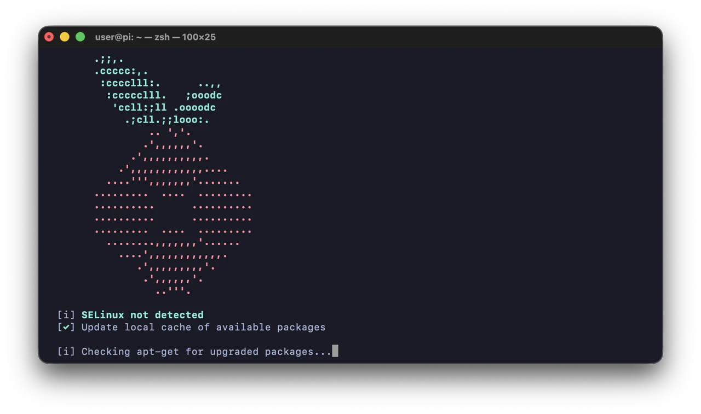
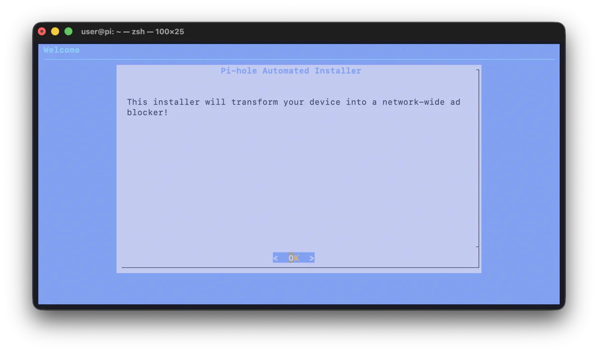
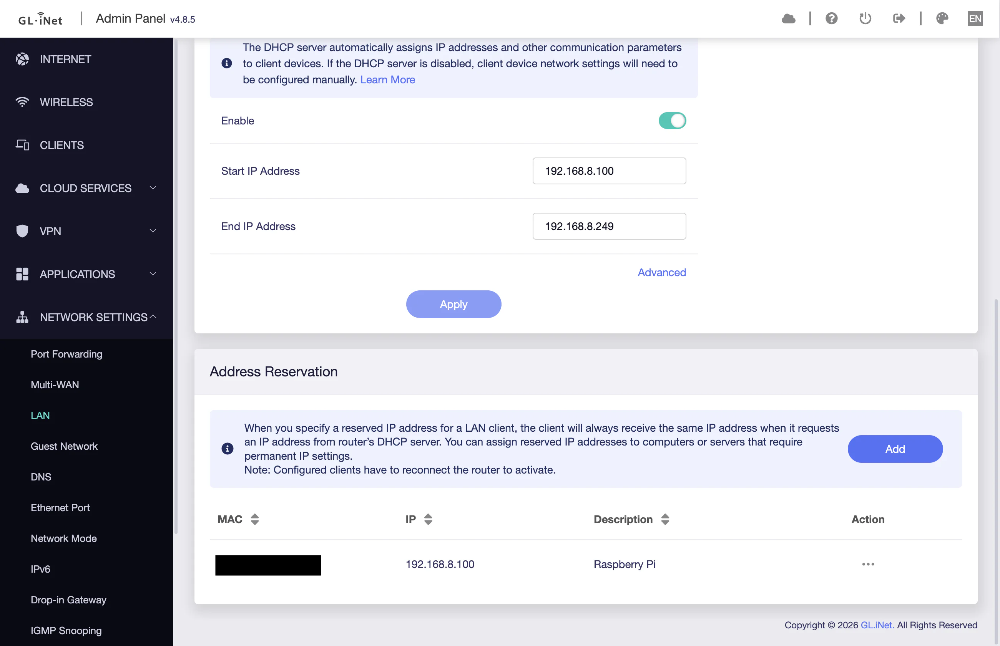
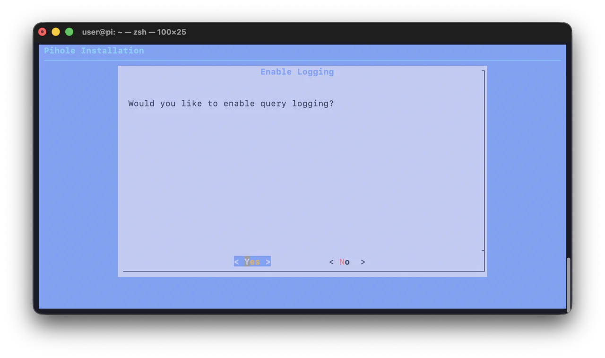
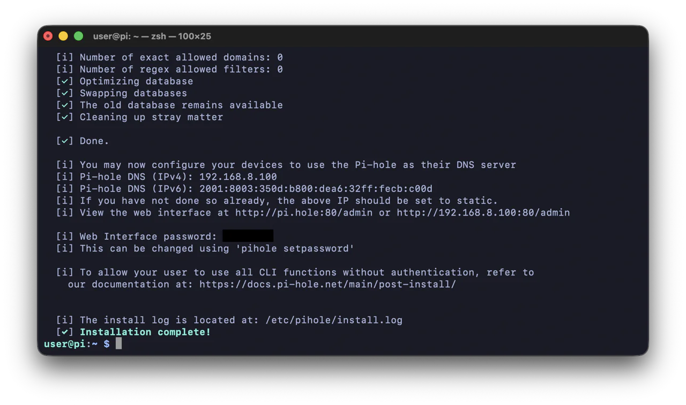
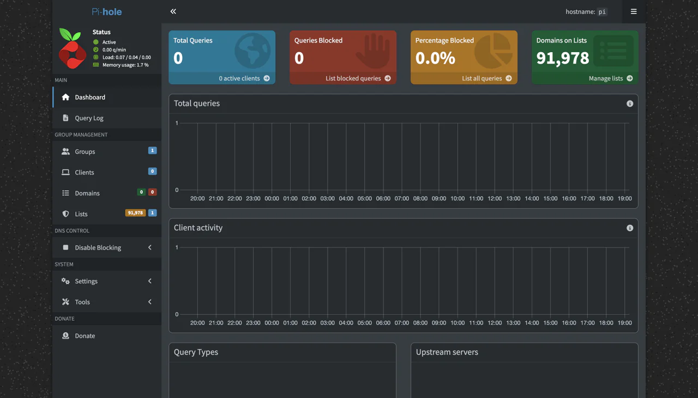
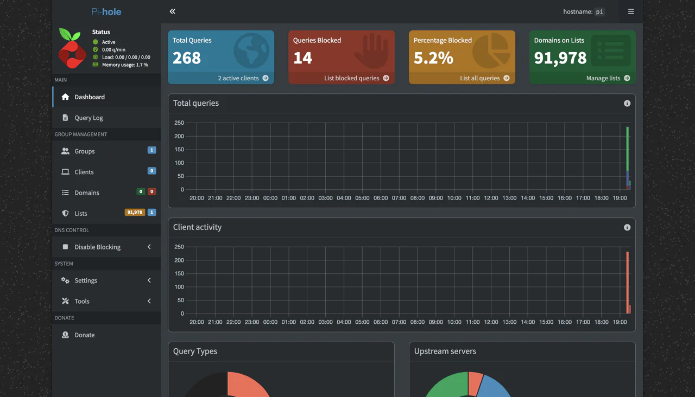
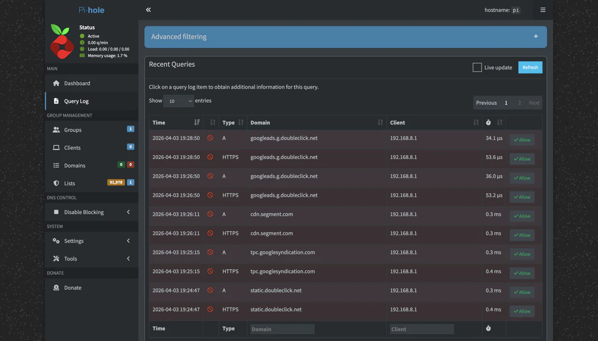
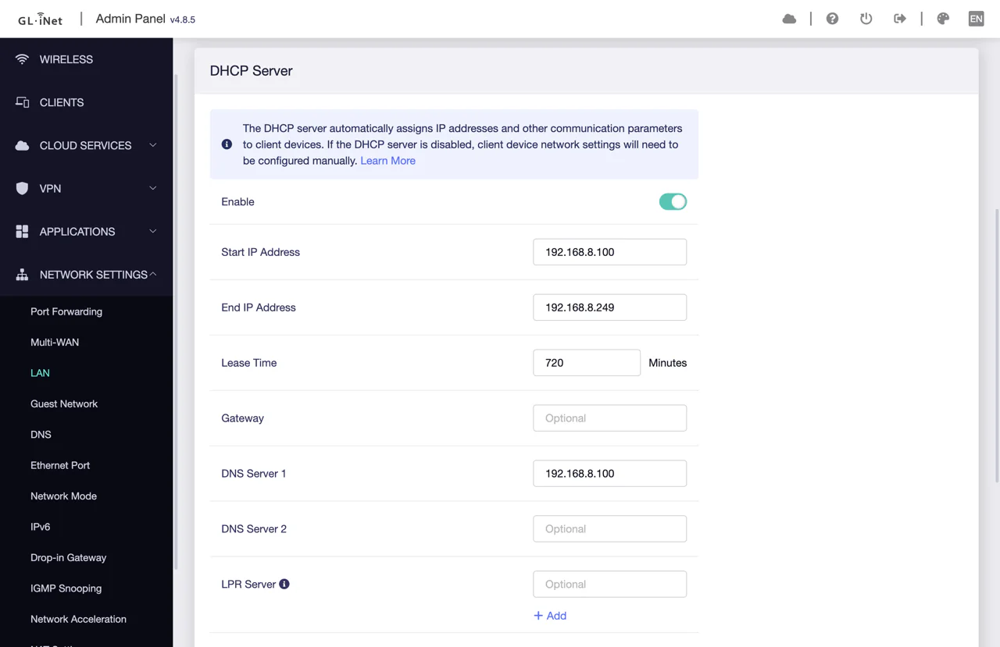
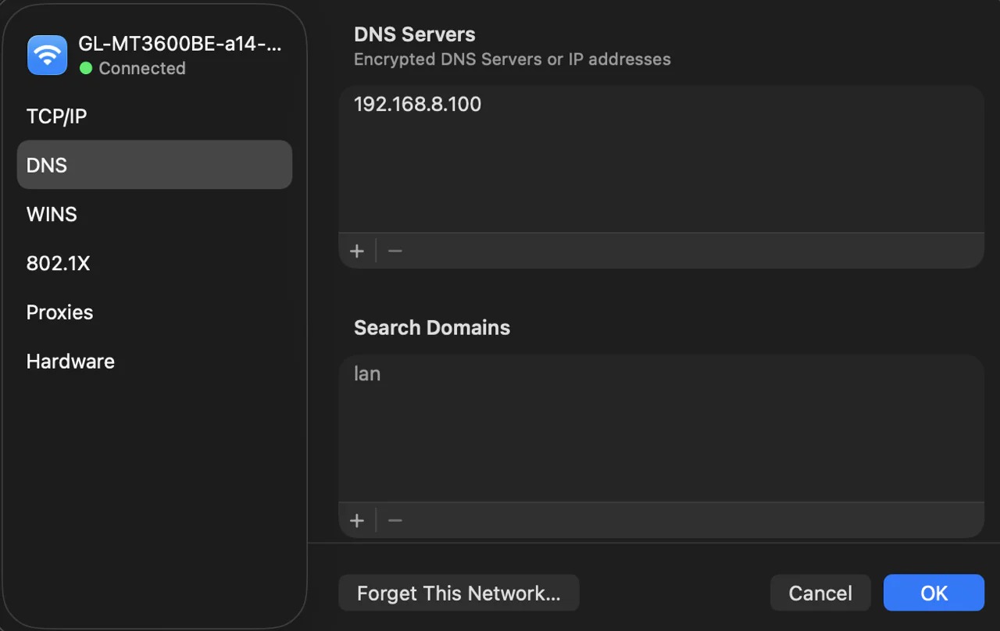

Setting up a Pi-hole part 2
Now that i've set up my raspberry pi with its new OS, it's time to go ahead and actually set up the PiHole.
Installing Pi-hole on the Pi
Going to https://pi-hole.net/, presents us with a very straight forward set of steps to install Pi-hole. Since we've already installed a compatible OS we can head to step 2, install the actual software, found here.
Navigating to their github repo installation guide presents us with several options, the simplest of which is using their automated command line installer using a curl command, naturally i'll choose this option and use the following command:
curl -sSL https://install.pi-hole.net | bash
The Setup

The installer begins to run..

Now the installer will run us through the onboarding setup, it's going to let us select various options for how we want the pi-hole to be configured.
Static IP and DHCP Reservation

In this next screen, the installer tells us that we need to set a static IP address for the raspberry pi running pi-hole. This is because the pi-hole will act as a DNS (Domain Name System) for the router and/or the other hosts on the local network. If the pi's IP address was dynamic (and not static) it will be periodically changing and receiving a new IP address from the DHCP (Dynamic Host Configuration Protocol) server. Whenever the other hosts on the network go to make a DNS request via the pi-hole, it's address would likely have changed, and therefore, the pi would not be able to respond to the host making the request.
To circumvent this we'll do a DHCP reservation, with this we can tell the DHCP server to always give the raspberry pi the same static IP address when it comes time for it to renew all of the IP address leases for the hosts on the network.
Reserving an IP address on the DHCP server

For my devices connected on my local network, the DHCP server is my router, this should be the case for most home setups unless one has already set up a separate DHCP server intentionally. Since some standard ISP provided routers apparently don't provide the ability to do DHCP reservations, pi-hole has the ability to also work as a DHCP server using dnsmasq under the hood if needed, more details on that can be found here.
My router is from GL.inet, so my setup looks like this, but it should be similar for most routers: for my setup, i just had to login to the admin panel at its IP address, go to the LAN section, go down to the address reservation section, and add a new reservation entry. To set the raspberry pi's IP as static, we need to provide its MAC (Medium Access Control) address to identify the hardware, and set an IP address that it will keep. The pi's MAC address can be found on the routers client list.
The IP address should be set within the range of the subnet, my subnet mask is set to 255.255.255.0 and therefore and is a /24 network. The usable range would be from x.x.x.1 to x.x.x.254, as x.x.x.0 and x.x.x.255 are already reserved for the network and broadcast addresses respectively. My router is already set to x.x.x.1 (or 192.168.8.1), so i'll leave that alone. We can also observe that the DHCP server on my router has an IP address start and end range (or pool), which it can hand out address leases from.

I decided to set my address reservation to 192.168.8.100, which is within the range of the pool (192.168.8.100 - 192.168.8.249). Whether one should set their address reservations inside or outside of this DHCP pool was debated online, it seemed to depend on the DHCP server and the network architecture generally. As far as i understand at the moment, it doesn't seem to matter for my situation, as long as it's in the right subnet and not already taken. The pi needs to be rebooted in order to get the new static address. This can be done with the command sudo reboot.
After rebooting, we can see here back on the client list that the raspberry pi has received its brand new static/reserved IP address of 192.168.8.100.
Network Interface

Back to the installer now, it asks us to select a network interface. I selected eth0 (the ethernet connection), as it's already connected and will be reliably available, and fast.
Upstream DNS Provider

Here we are offered several choices for which Upstream DNS provider we would like to use. For this i had to learn a bit about upstream DNS servers because i didn't know much about them at the time, more info can be found in pi-holes documentation here. I decided to go with Cloudflare's 1.1.1.1 DNS as my upstream DNS provider, because it is said to be fast and good for privacy.
Briefly, this is my understanding as to what upstream DNS providers are for. Ordinarily as a client computer, when connecting to a website hosted on a web server on the internet - we as humans who recognise words much better than numbers - would use a web address consisting of a domain name, and other aspects of the address (example.com). However, my client computer needs the actual IP address of the host to be able to connect, not the domain name.
A DNS is used to resolve a domain name with its corresponding public IP address, eg. example.com becomes x.x.x.x. An upstream DNS is required, because they are large providers which have access to all of the records linking the domain names to their respective IP addresses. My router by default has its DNS server set to automatic, which is just deferring to whichever upstream DNS provider is set by the upstream network: the ISP (internet service provider) in most cases, or a VPN if one is enabled.
The pi-hole acts as an intermediary DNS. When a client connecting through it makes a request to a website (web server host), the pi-hole DNS first filters the domain name request against a block list, whatever is blocked returns null. The filtered request then passes on to the upstream DNS that has been configured, (cloudflare 1.1.1.1, or google 8.8.8.8 for example). The upstream DNS resolves the domain name with its corresponding IP address, sending the response back to the pi-hole. The pi-hole then finally provides the response back to the original client. The original client computer now has the web server's actual IP address (or not if it was blocked). The client can now initiate the TCP/IP connection with the web server.
Blocklists

The set up now asks if we want to include the default blocklist, i just went with yes, as the default list is apparently good and well maintained, there are plenty of other blocklists that appear to be good and recommended online too. As the set up says, you can add and remove lists easily later.
Query Logging

Query logging allows you to well.. log the domain queries made by all clients filtering through the pi-hole when using it as an intermediary DNS. This enables you to view all of the domain queries passing though the pi-hole, and therefore see what websites all of the connected clients are trying to connect to. I enabled this setting because it will allow me to more easily see how pi-hole is working and so i can confirm it is working while i learn and experiment with it.
Privacy mode

This is related to the query logging, it allows you to manage the degree to which you can see what sites are being visited by the connected clients. This is a good feature if you were using pi-hole and query logging on a family/shared router, so you can respect the privacy of people on your network. Since i'm not using this on a shared router (my pi is connected through a secondary router), and because i am mainly installing this for experimental purposes, i have gone with option 0 - show everything.
Installation Complete


Nice! Now, as we can see, the pi hole installation is complete. The installer has given us some final instructions be able to use the newly installed pi-hole software effectively:
It says we need to configure our devices to use the pi-hole as its DNS server.
We can now login to the admin panel at the pi's IP address port 80 with the provided password. In my case http://192.168.8.100:80/admin (or http://pi.hole:80/admin).
The Pi-hole Admin Panel

First, we can go and quickly check out the Pi-hole's admin panel by navigating the URL mentioned above. After logging in, we are presented with the main dashboard. There are a lot of different useful sections here with which we can analyse data coming through the pi-hole. However, as we can see, there isn't any data coming through the pi-hole yet. This is because we haven't pointed any devices/hosts to the pi-hole yet, it isn't receiving any requests that it can filter yet.
Configuring the Pi-hole as a DNS
In order to get the Pi-hole to act as a DNS, we first need to configure it as a DNS (with the pi's IP address), on whichever devices we want to use the Pi-hole as a DNS. This can be done in a few different ways, I'll show three different ways i tried it (i mean i'm here to learn after all, why not 😄).
Configure the pi as a DNS on the router in DNS settings: this will make it so that the router chooses the pi as its DNS, all devices connected to the router will be using the router as its upstream DNS. The router will receive all connections from hosts, the router will connect to the pi's DNS on the devices behalf. Because all queries to Pi-hole arrive via the router's IP address, Pi-hole will have no visibility of individual devices with this option.
Configure the pi as a DNS on the router in DHCP settings: this should effectively be very similar to the above, however the difference is this, during the DHCP lease process, while assigning the device its IP address, the DHCP server (the router) assigns each device/host the pi as its DNS. This means that each individual device will communicate directly with the pi's DNS server, and therefore, will be individually visible to the Pi-hole, allowing for more detailed data.
Configure the pi as a DNS on each individual device: this skips configuration on the router, and instead we select only the devices we wish to use with the pi's DNS. We configure this in each device's network settings (macOS network settings for example). This is great if you only want certain devices to be filtered and not others, but could be tedious if you want to connect many devices.
So we have:
- All devices -> Router DNS -> Pi-hole DNS
- All devices -> Pi-hole DNS
- Select devices -> Pi-hole DNS
Option 1: Configuring the DNS for the router

Anyway, lets begin by configuring option one first. Heading back over to my router's admin panel now, we can see that there is a DNS section under network settings. All i had to do was change the mode from automatic to -> manual DNS, and then to add the pi's IP address (192.168.8.100) to the 'DNS server 1' field. Once applying this Pi-hole should be up and running and functioning as our DNS filter now.
We can confirm that it's working by heading back over to the admin panel at http://192.168.8.100:80/admin.
Pi-hole Admin Panel Check and Overview

And success! We can see that queries are successfully coming through, we can also see that some domains are successfully being blocked.
Without getting too lost in all of the different settings and features just yet, lets just look at the four panels at the top of Pi-holes's admin panel. From left to right we have: Total queries, queries blocked, percentage blocked, and domains on list.
- Total queries: here we can see how many domains are being queried, and how many clients are connected. If we were to click through here we would see all of the query urls, and which client they are coming from. At the moment, there are only 2 clients connected: the router and the pi.
- Queries blocked: here we can see the amount of domain queries that have been checked against the block-list, matched a blocked domain name, and been blocked. We can click through and see which domain names have been blocked.
- Percentage blocked: this should be rather self-explanatory, the percentage of total queries that have been blocked.
- Domains on list: this is the block-list, the long list of domain names which will be filtered/checked against to determine whether a query should be blocked or not. If we click through, we can view the block-lists, configure them per device, add additional block-list/remove them etc.

Here is a screenshot of some domains that appeared on my block-list. We can see that many of them are from google ads/ doubleclick.net, which is expected.
Additionally, we can see that all of the client IP addresses are listed as 192.168.8.1, which is my router's IP address, this matches what we discussed above with regards to the DNS configuration, Pi-hole can only see the queries coming from the router's IP address and not that of each individual device.
Option 2: Configuring the DNS via DHCP

Moving on, now lets change the DNS configuration to instead use DHCP for the DNS assignment. First we'll undo the DNS setting made previously in the DNS section of the router's network settings. Next, we'll head over to the LAN section in network settings, and scroll down to the DHCP server settings. All that's needed now, is to set the 'DNS server 1' field to the pi's IP address, in my case 192.168.8.100. This should do the trick, after applying the new setting, we can again head back to Pi-hole's admin panel and verify that the changes work.

After observing the dashboard and seeing new queries coming in as i visit new websites etc., we can indeed see that it works, great! Something to note, is that we can now see 4 active clients on the total queries panel. This indicates that the DHCP DNS setting has worked, and that Pi-hole can now see the other devices connected to the router (as apposed to earlier when it was only detecting itself/the pi and the router), we can further confirm this by entering into the total queries section and see the queries linked to each device IP address.
Option 3: Configuring the DNS for select devices

And finally, we have the third option for configuring the DNS as mentioned above, in this option we will only configure the DNS settings on the select devices we want using Pi-hole as a DNS. To do this again, we will first undo the DNS setting made in the previous option (in the router -> LAN -> DHCP settings). Next, we will configure the DNS setting on each individual device. This will obviously vary quite a bit depending on the devices OS, but the setting should be found somewhere in the network settings in the devices OS, it should be quite similar really. The laptop i am configuring is running macOS, so the screenshot shown here corresponds to the setting found on macs.
To get to this setting is as follows: Settings -> Wi-Fi (or other connected network interface) -> Details -> DNS. Then it's just a matter of changing the DNS IP address to that of the pi 192.168.8.100. And done, this will now make it so this device directly sends its DNS requests to the pi instead of the router.
And there we have it. There are many other options and cool features/settings for the Pi-hole to play around with, but for now i'll leave it there. This was definitely useful to me for getting some hands on experience with configuring DNS and DHCP settings, and for learning about upstream DNS providers and so on. Thanks for reading!